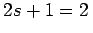
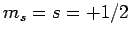
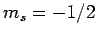
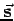
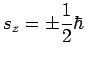
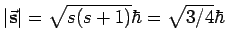
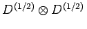
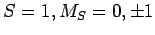
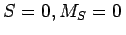

Inhalt Index DeskTop Bronstein

 Algebra und Diskrete Mathematik Klassische algebraische Strukturen Anwendungen von Gruppen Anwendungen in der Teilchenphysik
Algebra und Diskrete Mathematik Klassische algebraische Strukturen Anwendungen von Gruppen Anwendungen in der Teilchenphysik


Die Spinfunktionen eines Teilchens mit der Spinquantenzahl s= 1/2 transformieren sich nach der Darstellung D(1/2) der Gruppe SU(2) mit der Dimension . Das höchste Gewicht ist . Darüberhinaus enthält der Darstellungsraum nur noch den Basiszustand mit dem Gewicht , so daß der Teilchenspin  nur zwei Einstellungsmöglichkeiten auf die Quantisierungsachse besitzt, . Der Betrag des Spins wird durch den Eigenwert des CASIMIR-Operators der LIE-Algebra su(2) bestimmt: .
Die Spinfunktion zweier Teilchen mit dem Spin s=1/2 transformieren sich nach der Produktdarstellung . Bei einer geeigneten Basistransformation im vierdimensionalen Produktraum zerfällt diese Darstellung in zwei irreduzible Darstellungen mit dem Gesamtspin S=1,0:
Es ergibt sich ein Spintriplett  und ein Spinsingulett .